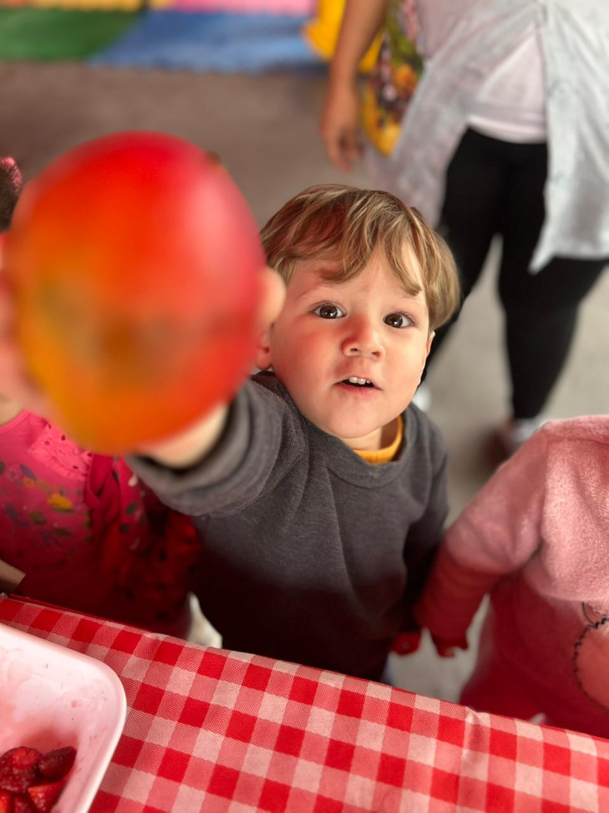
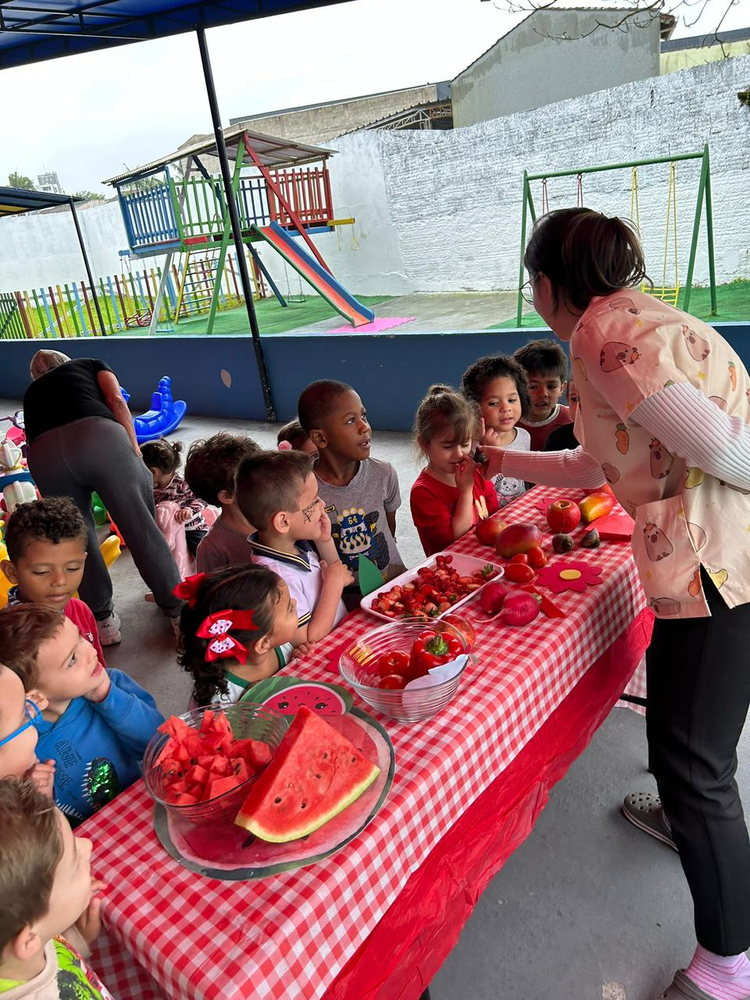
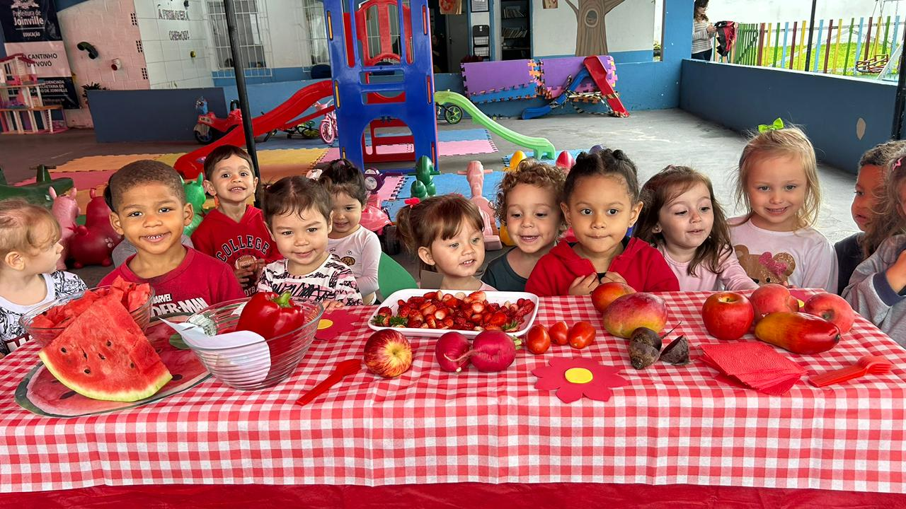
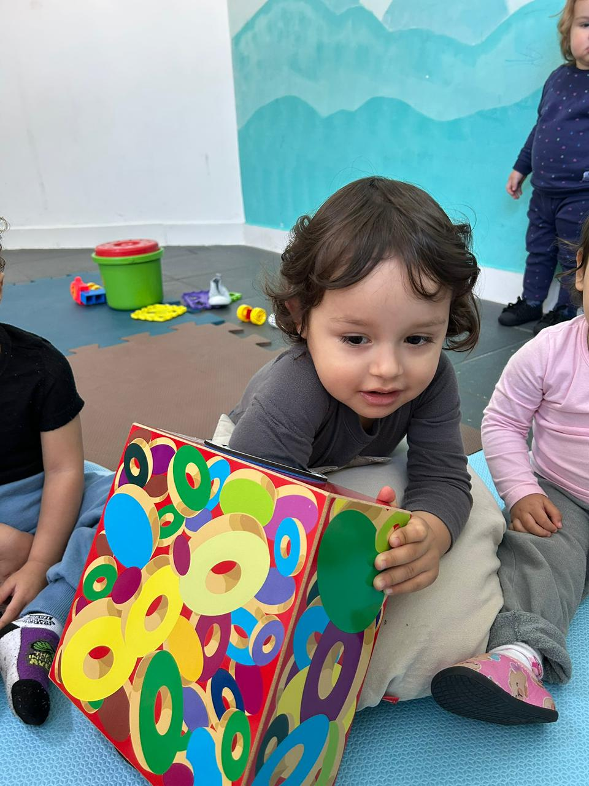
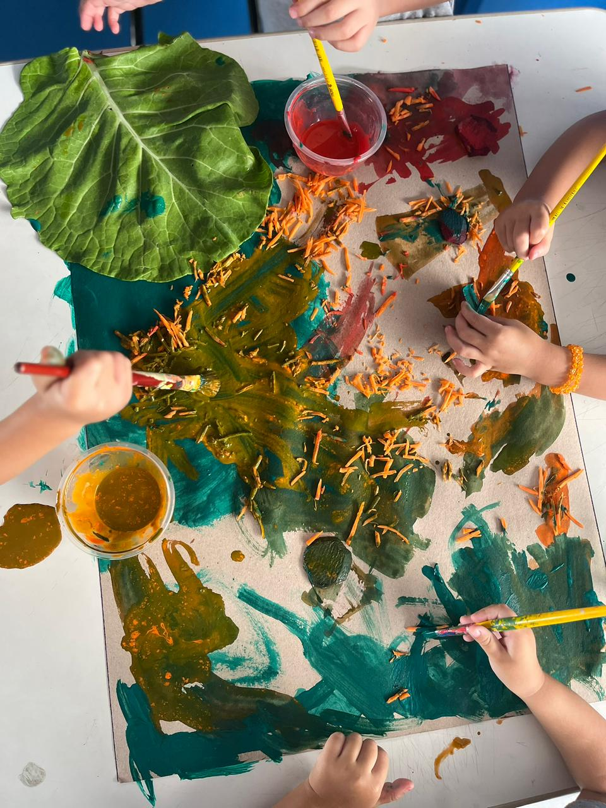
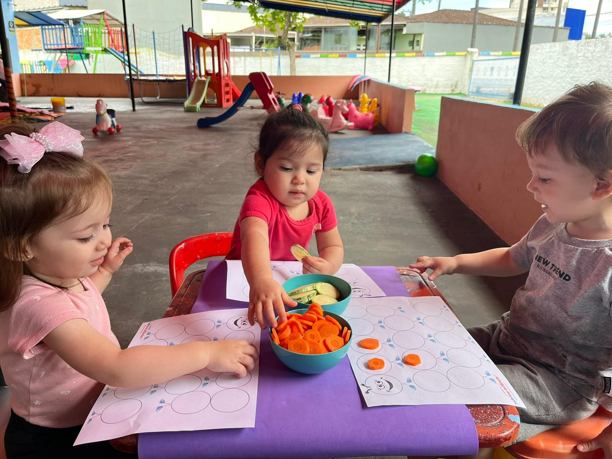

Atividades em CEI 🏫🎨
Aqui, cada criança se transforma em exploradora de sabores e hábitos saudáveis! 🍎
Com brincadeiras, oficinas práticas e muita interação, estimulamos o desenvolvimento motor, o paladar e a autonomia na alimentação.
Tudo de forma divertida, segura e cheia de descobertas! 💚

🍅 “Qual o sabor do vermelho?” — começando a descoberta com a manga na mão!

👩🏫 Olhinhos atentos! A Nutri explicando tudo sobre as frutas e legumes vermelhos.

😍 Curiosidade e encantamento! A reação perfeita diante das cores e sabores da mesa.

🎁 Mão misteriosa! Tentando adivinhar o que tem dentro da caixa… será que é doce ou azedinho?

🎨 Muita criatividade na hora de pintar com cores da natureza — couve e cenoura viraram tinta!

🥕 Brincar também é aprender! Cenoura e abobrinha viraram parte da nossa brincadeira em uma aula cheia de diversão e descobertas.